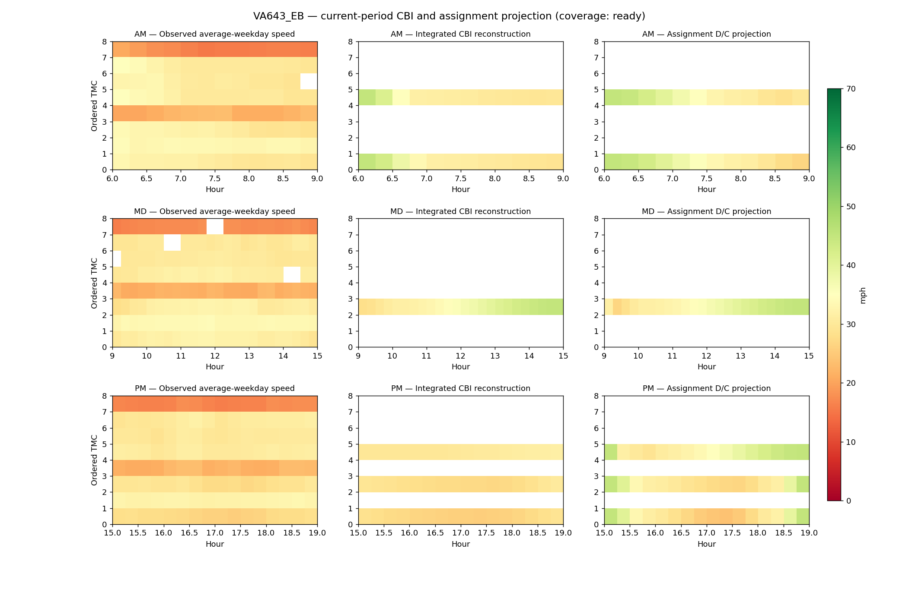
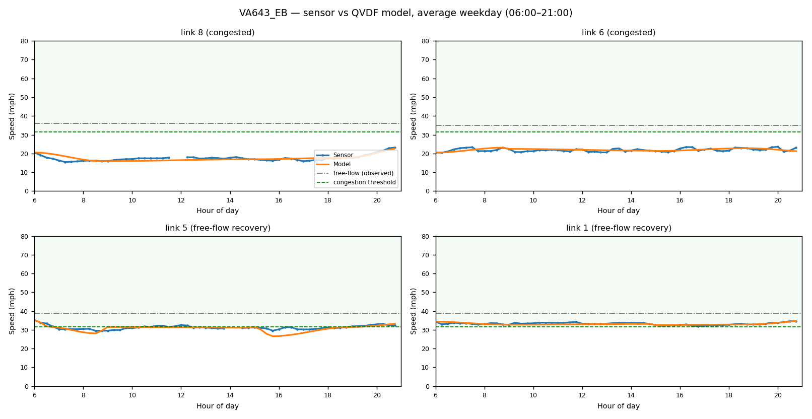
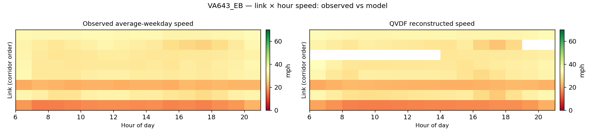
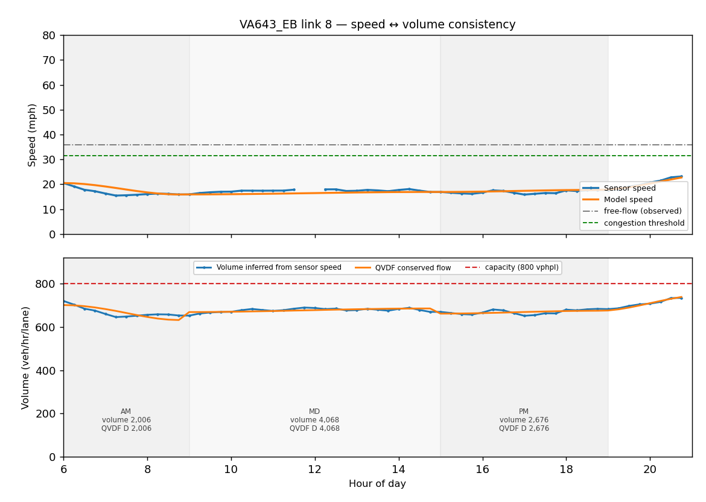

← Interactive corridor map
VA643_EB
Coverage status: ready. AM 06:00–09:00,
MD 09:00–15:00, PM 15:00–19:00.
Assignment projection analysis

Daily analysis
Sensor versus model, full day

Speed heatmap

Speed and volume
